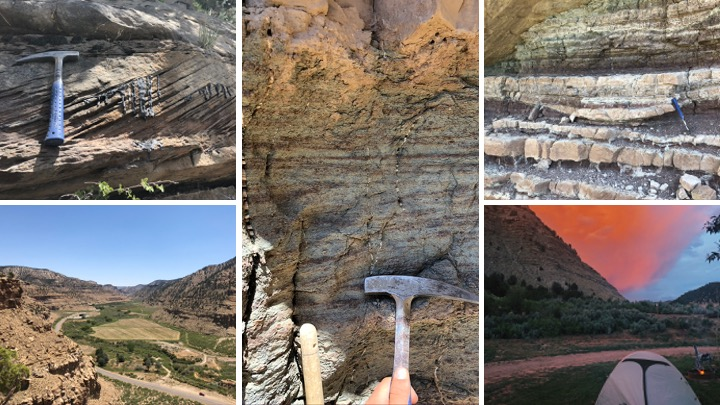

James (Jake) Gearon

| Geomorphologist & Data Scientist | Nature Author Investigating sedimentary landscapes through the lens of data science and remote sensing. Specializing in river avulsions, lacustrine systems, and geospatial data engineering. CV |
GitHub | LinkedIn Contact: jhgearon@iu.edu |
The Supply-Generated Sequence
A New Sequence-Stratigraphic Model for Fluvio-Lacustrine Deposits

Project Overview
This research introduces a new, high-resolution correlation panel demonstrating the usefulness of a novel lacustrine sequence stratigraphic concept: the Supply-Generated Sequence (SGS). This work addresses fundamental inadequacies in previous sequence stratigraphic interpretations of lacustrine systems.
Key Findings
- Developed the Supply-Generated Sequence (SGS) concept for lacustrine systems
- Documented lateral complexity in sandstone event deposits
- Characterized the Sunnyside Interval System as a terminal “Supply-Controlled Splay Delta”
- Identified orbital forcing mechanisms in early Eocene Hyperthermal events
Technical Details
The research focused on:
- Outcrop-based, near depositional-strike cross sections
- High-resolution correlation panels
- Analysis of δ¹³C excursions
- Documentation of facies variability
Publications
James H. Gearon, Cornel Olariu, and Ronald J. Steel. The supply-generated sequence: A unified sequence-stratigraphic model for closed lacustrine sedimentary basins with evidence from the Green River Formation, Uinta Basin, Utah, U.S.A. Journal of Sedimentary Research, 92(9):813–835, 2022.